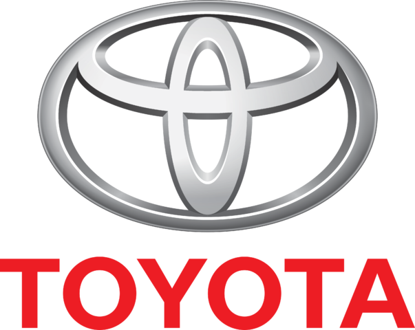
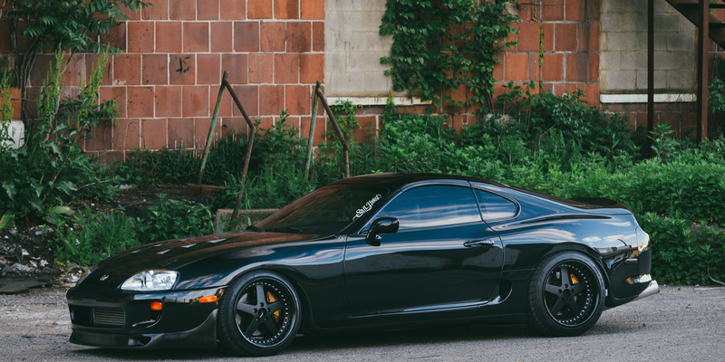

|  |  | |
| Тойота Мотор Корпорейшн — японська автомобільна корпорація, що входить до складу фінансово-промислової групи «Тойота». Одна з найбільших автомобільних компаній світу. | ||
| У першому кварталі 2007 року «Тойота» з показником 2,348 млн проданих авто вперше зайняла за цим показником перше місце у світі, обійшовши GM (2,26 млн), беззмінного лідера впродовж десятиліть. Toyota Motor закріпила тенденція на лідерство, ставши найбільшим у світі автовиробником за підсумками 2008 року, відібравши лідерство у General Motors Corp. Сьогодні Тойота — один з найбільших світових виробників автомобілів. У групі Toyota — безліч як автомобільних, так і таких компаній, що займаються багатьма різними видами діяльності. | ||